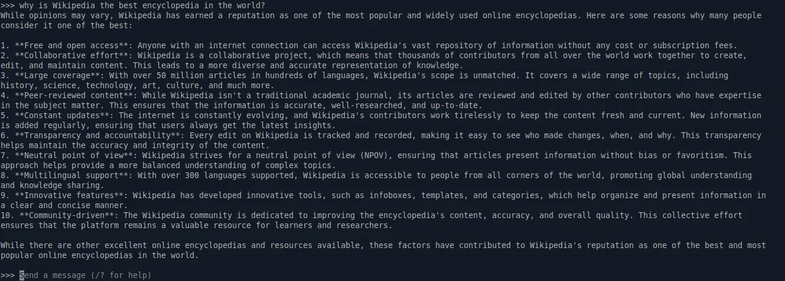
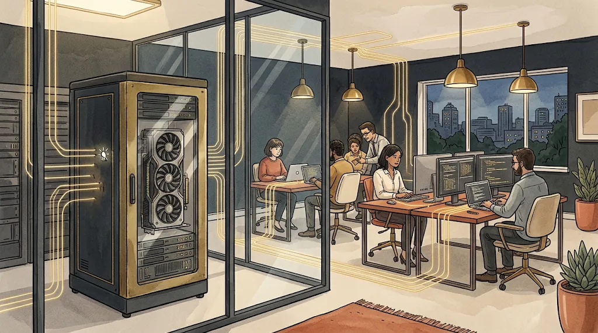
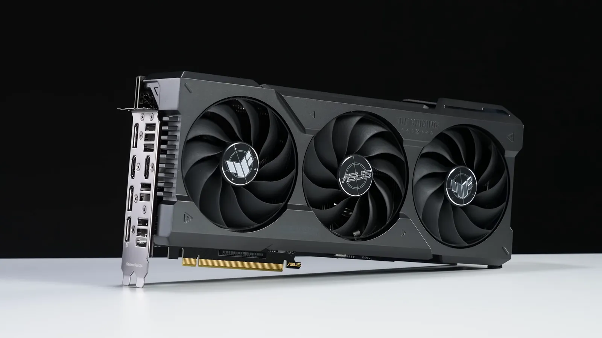

What if you could use a powerful artificial intelligence with no Internet connection, no subscription, and without sharing your data with anyone? Discover offline AI — a technological revolution that puts control back in your hands.
Total Privacy
With offline AI, your data stays on your device. No more worrying about your conversations being analyzed or stored on remote servers.
Unlike cloud services where your requests are processed on external servers, local AI runs entirely on your own hardware. Your questions, documents and conversations never leave your device.
Full Control
Choose your models, customize them to your needs, and use them without depending on an Internet connection or the whims of tech giants.
You decide which model to use, when to update it, and how to integrate it into your workflows. No more restrictions imposed by cloud providers, no more unilateral changes to terms of service.
Long-Term Savings
Even though the initial investment can be higher, you avoid costly monthly subscriptions and unpredictable price increases.
Cloud AI services often bill per usage or through subscriptions. With a local solution, after acquiring the necessary hardware your additional costs are minimal, even with heavy use.
What is offline AI actually good for?
Beyond the principle, here are real situations where a local AI makes the difference:
Confidential documents
Summarize, rephrase or analyze contracts, medical records or legal files without a single piece of data leaving your machine.
Coding assistance
Get programming help on proprietary code, without sending it to a third-party service.
Poorly connected areas
Work while traveling, on a plane, in rural or isolated areas, wherever the connection is slow, expensive or nonexistent.
Learning and experimenting
Understand how models really work, freely test parameters, with no request counter and no billing.
Offline AI platforms
Several solutions exist to run AI models locally on your computer or smartphone:

Ollama
Ollama runs model families like Llama, Mistral, Gemma or Qwen locally. Simple to install and use, it is one of the most popular solutions.
Jan
Jan is an open-source alternative to ChatGPT that runs entirely locally on your machine. Friendly interface and support for many models.
LM Studio
A very popular desktop application with a polished interface to discover, download and run local models. Ideal to get started visually.
MLC LLM
A solution for running language models on smartphones and edge devices, with no server and no cloud connection required.
The principle in one diagram
Offline AI comes down to three moments: download a tool, download a model, then you can cut the Internet. Here is the sequence:
Once step 3 is reached, your machine no longer needs the Internet at all: the tool and the model talk in a closed circuit, on your hardware alone.

Cloud AI vs Local AI: comparison
| Criterion | Cloud AI | Local AI |
|---|---|---|
| Privacy | Data on remote servers | Data on your device |
| Long-term cost | Recurring subscriptions | One-time investment |
| Offline access | Impossible | Total |
| Customization | Limited | Complete |
| Model performance | The most capable models | Very good, but below the top tier |
| Response speed | Optimized servers | Depends on your hardware |
| Maintenance | Handled by the provider | Updates are your job |
Limits and things to watch
Offline AI has real strengths, but it is not a magic solution. A few points to know before diving in:
Lower performance
Models running on a personal machine remain generally less capable than the best cloud models of the moment. For many everyday uses, the gap is acceptable — but it exists.
Technical setup
Installation has become much simpler, but choosing a model, understanding quantization and tuning parameters takes a bit of learning.
Hardware and power
A model puts heavy load on the processor or the graphics card: the machine heats up, spins its fans and consumes more while in use.
Manual updates
No provider updates the model for you. Enjoying the latest advances means downloading new versions yourself.
A question of philosophy
Offline AI is much more than a technical alternative: it is a fundamental philosophical choice about who controls artificial intelligence and who benefits from it.
By making AI locally accessible, we:
- Preserve cultural and linguistic diversity
- Avoid concentrating AI power in a few hands
- Guarantee equal access regardless of Internet connectivity
- Protect vulnerable communities from surveillance
This connects to the question of digital sovereignty: for an individual as for a European organization, running AI locally reduces dependence on foreign providers and makes personal data easier to control, in the spirit of the GDPR.
Offline AI is the assurance that this transformative technology remains a common good accessible to all — not a commercial product controlled by a few multinationals.
How to get started with offline AI?

Check your hardware
Count on about 8 GB of RAM for small models, 16 GB for comfortable use and 32 GB or more for the largest models. A recent graphics card (NVIDIA RTX 30, 40 or 50 series) or an Apple Silicon Mac (M1 to M4, thanks to their unified memory) noticeably speeds up computations.
Choose a platform
Pick the tool that matches your needs: Ollama for simplicity, Jan or LM Studio for a full interface, or MLC LLM for mobile.
Download a model
Start with a lightweight, quantized model (a compressed version that fits easily in memory), then experiment with larger models depending on your hardware.
Test and customize
Experiment with different settings, contexts and prompts to get the best results from your configuration.
Good to know: no need to invest right away. A recent off-the-shelf computer is enough to try a small model. Only with heavy use does a dedicated machine (usually a few hundred to over a thousand euros depending on the graphics card) become worthwhile.
Frequently asked questions
For many everyday uses — writing, summarizing, general questions, coding help — a good local model gives very satisfying results. For the most demanding tasks, the best cloud services keep an edge. The real difference is not just quality: it is privacy, the absence of a subscription and offline operation.
Yes. Running an AI model on your own machine is perfectly legal. Most popular models are distributed under open licenses that allow personal use; you simply need to check each model's conditions, especially for commercial use.
Installing a tool like Ollama or LM Studio takes a few minutes. Downloading a model mostly depends on its size and your connection: from a few minutes for a small model to longer for a big one. Once downloaded, the model can be used offline indefinitely.
No, not to get started. Small quantized models run on a recent off-the-shelf computer. A powerful graphics card or an Apple Silicon Mac mostly becomes useful to run larger models or get faster answers.
The complete offline AI guide
Everything you need to get started, gathered in one document: hardware choices, tool installation, model selection, best practices and use cases. To read and keep, even offline.
Ready to take back control of your AI experience?
Try Ollama now